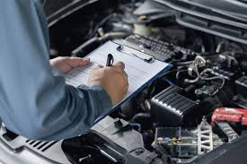

Here at NK Detailing, we have a detailing package to fit your needs. Listed below are prices and package descriptions. Prices vary based on the size of the vehicle, please contact us if you have questions about the pricing of your specific vehicle. We also do custom packages! Want a basicv clean plus a wax? Come see us for an estimate.
Inside and outside deep cleaning, no wax or ceramic.
Basic Cleaning + wax, cermaic coating, and interior protectant.
Basic Detail + headlight polishing, fluids topped off, diagnostic test, seat deep cleaning, and top-shelf wax, ceramic coating and interior protectant.
Advanced Detail + claybar, paint buff/polish, paint chip repair, clear coat repair, and interior upholstery repair.
Here at NK Detailing, we can also keep your car in running condition. Our prices are some of the best in the area, and we can repair and detail in the same appointment. Listed below are common repairs and maintenance we do.
Oil/Fluid Changes
Brake Repair
Steering Alignment
Electrical Repairs
Exhaust Repair/Install
Wheels and Tires
Diagnostics
Batteries
Lights
& So Much More!
